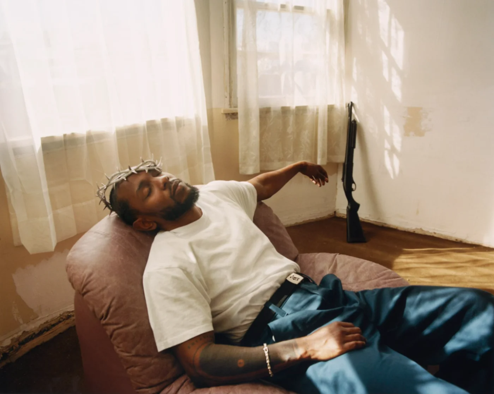

Because in all of its vulnerability and virtuosity, Lamar’s fifth studio album, “Mr. Morale & the Big Steppers,” doesn’t give the impression that it wants to be listened to with starry-eyed admiration so much as witnessed with human hyper-attention. Across 70-plus minutes, our narrator embarks on a scrupulous spilling of guts — heart and brain — rhyming about grief, mortality, ancestral trauma and survivor’s guilt, all with a confessional intimacy that feels astrophysically vast. Even his tropey cash brags lean cosmic: “I bought infinity pools I never swimmed in.”
That line comes during “United in Grief,” an album starter that Lamar front-loads with rhetorical riddles before snapping into his outside voice. “I went and got me a therapist!” he shouts unexpectedly, as if leaning out the window — and every lyric that follows on “Mr. Morale & the Big Steppers” seems shaped by that decision. “Popping a bottle of Claritin/ Is it my head or my arrogance?” he asks, wondering whether he’s grown allergic to his own ego before an anxious snare beat kicks in, prompting him to contemplate the side effects of “money wiping the tears away.” His ultimate realization — “I grieve different” — becomes the song’s refrain and the album’s mantra.
How different, and different how? “You ain’t felt grief till you felt it sober,” Lamar explains on the album’s penultimate track, “Mother I Sober,” which uses the same internal-to-external-voice shift, only this time with paralyzing intensity. The song’s central storyline begins with warm childhood memories quickly warped by a catastrophic misunderstanding: “Family ties, they accused my cousin: ‘Did he touch you, Kendrick?’/ Never lied, but no one believed me when I said he didn’t.” In the next verse, Lamar recounts his mother eventually telling him that she was a victim of sexual assault, and that she was projecting “for my protection” — and now, “20 years later, trauma has resurfaced/ Amplified as I write this song, I shiver ’cause I’m nervous.”
He’s clearly still working things out during “Auntie Diaries,” a masterful piece of storytelling about the trans members of his family. “My auntie is a man now, I think I’m old enough to understand now,” the song begins, with Lamar rhyming in his most delicate tones, contrasting happy memories of after-school pickups listening to DJ Quik in the car together against harsher recollections of the judgment of others. From verse to verse, he toggles between pronouns, symbolizing his family’s slow acceptance of his uncle’s identity — or at least that’s what it seems like. Elsewhere in the song, Lamar repeats a gay slur he used as a child, chastising himself for it — or at least that’s what it seems like
And there’s so much “seeming” in this music, which feels so cumulatively thick with nuance and metaphor that there are endless ways to understand and misunderstand it. But if you’re listening closely in the moment when Lamar raps, “I’m sensitive, I feel everything, I feel everybody,” you’re going to believe him with every particle of your being.
Look at the Newest video Directed By Kendrick Lamara aka kdot aka Kung-Ku Kenny.